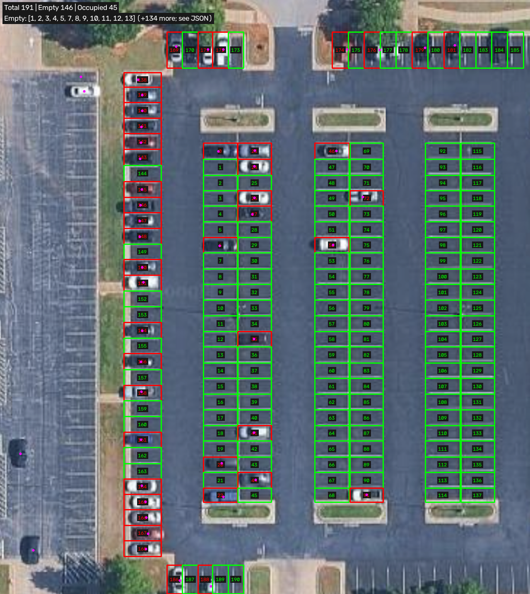
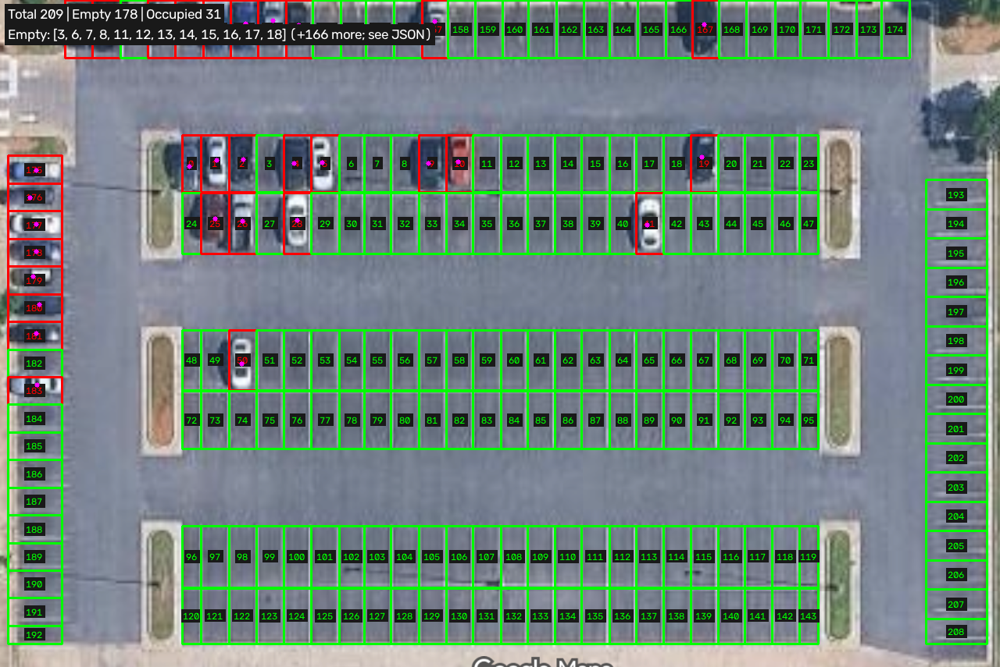
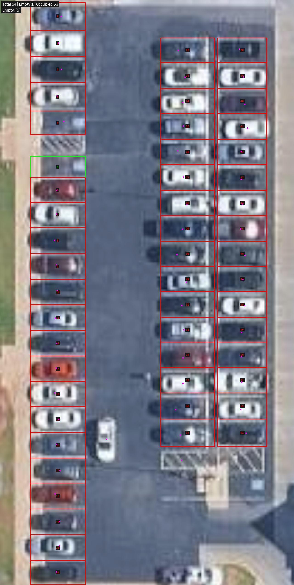
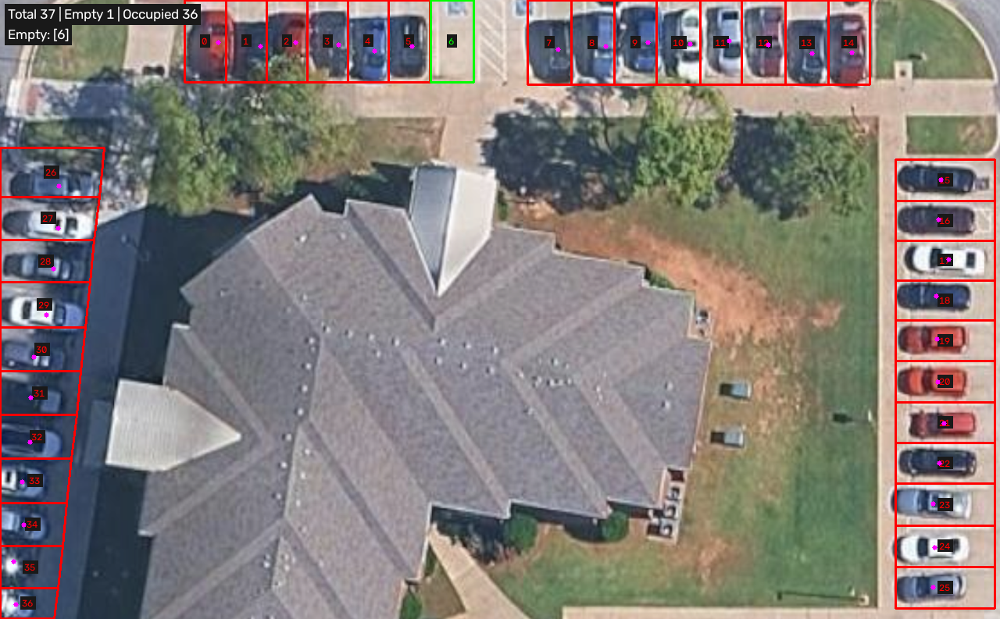
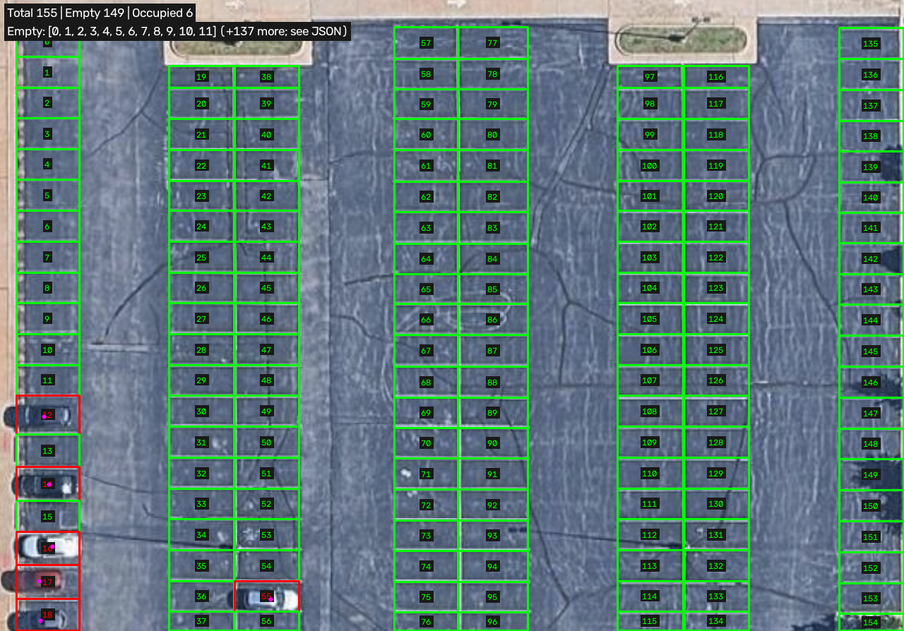

YOLO11s-OBB · confidence 0.25 · vehicle classes inferred from model · inference auto (1280 landscape / 1920 portrait) · frame width 1280 · CPU
Totals come from manually traced view-specific parking polygons. Aisles, hatch zones and unresolvable tree cover are excluded. Red/green are predictions; per-image errors below are measured against independent visual labels, with uncertain labels excluded.
Detected vehicles: 0 before → 49 after. Known false-empty slots: [170]; known false-occupied slots: []. Uncertain visual labels: [174, 175, 176, 177, 178, 179, 180, 181, 182, 183, 184, 185, 187, 189, 190].
Visible marked bays in the image, including identifiable cropped edge bays; excludes aisles, hatch zones, landscaping, and unresolvable tree cover.

Detected vehicles: 0 before → 31 after. Known false-empty slots: []; known false-occupied slots: []. Uncertain visual labels: [174, 193, 194].
Visible marked bays in the image, including identifiable cropped edge bays; excludes aisles, hatch zones, landscaping, and unresolvable tree cover.

Detected vehicles: 0 before → 55 after. Known false-empty slots: []; known false-occupied slots: [4]. Uncertain visual labels: [].
Visible marked bays in the image, including identifiable cropped edge bays; excludes aisles, hatch zones, landscaping, and unresolvable tree cover.

Detected vehicles: 0 before → 36 after. Known false-empty slots: []; known false-occupied slots: []. Uncertain visual labels: [].
Visible marked bays in the image, including identifiable cropped edge bays; excludes aisles, hatch zones, landscaping, and unresolvable tree cover.

Detected vehicles: 0 before → 6 after. Known false-empty slots: []; known false-occupied slots: []. Uncertain visual labels: [138, 139, 149, 150, 151, 152, 153, 154].
Visible marked bays in the image, including identifiable cropped edge bays; excludes aisles, hatch zones, landscaping, and unresolvable tree cover.
